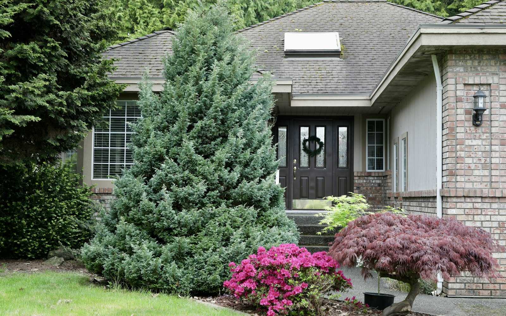
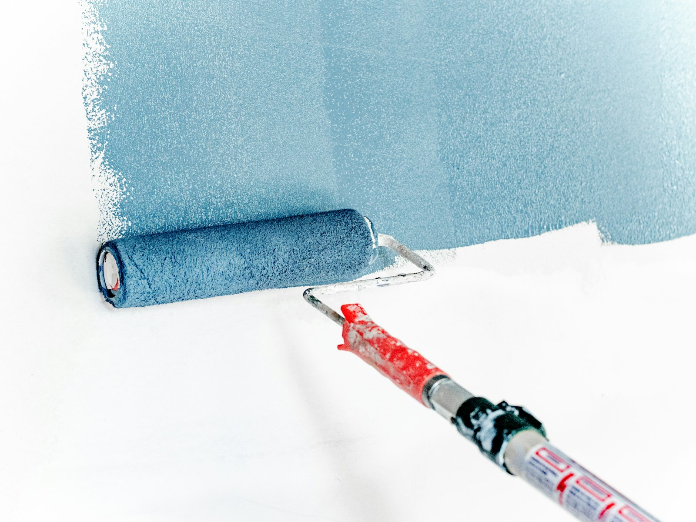
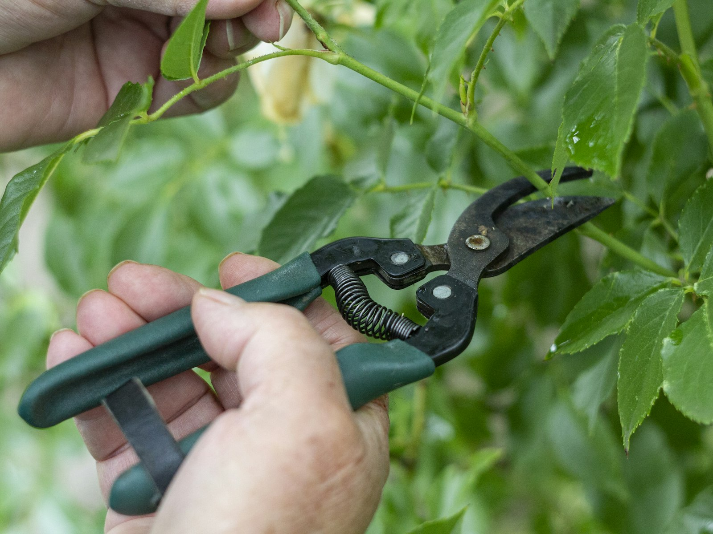
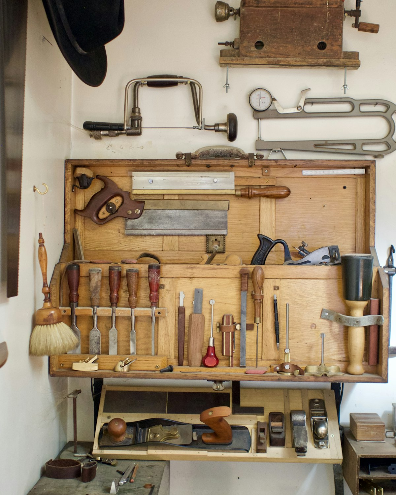

Hausmeisterdienste
Regelmäßige Kontrollgänge und kleine Instandhaltung — ein fester Ansprechpartner für Ihr Haus oder Grundstück.
Anfragen →
Hausmeisterdienste, Renovierungsarbeiten, Gartenarbeiten und Reparaturarbeiten rund um Mosbach — ein Ansprechpartner für alles, was an Haus und Grundstück ansteht.
Hausmeisterdienste, Renovierung, Garten und Reparatur laufen über eine einzige Anlaufstelle — statt vier einzelne Betriebe zu koordinieren.
Ob Hausmeisterdienste, Renovierungsarbeiten, Gartenarbeiten oder Reparaturarbeiten: Eine Anfrage genügt für alle vier Leistungen.
Die vier Leistungsbereiche decken Arbeiten drinnen wie draußen ab — abgestimmt über denselben Ansprechpartner.
Vier Bereiche aus einer Hand — jede Leistung können Sie direkt als Anfrage auswählen.
Wählen Sie mindestens eine Leistung aus, dann fassen wir Ihre Anfrage hier zusammen.
Zusammengestellte Anfrage sendenRegelmäßige Kontrollgänge und kleine Instandhaltung — ein fester Ansprechpartner für Ihr Haus oder Grundstück.
Anfragen →
Streichen, kleine Ausbesserungen und Instandsetzung — sauber ausgeführt, wenn an Wänden oder Räumen etwas aufzufrischen ist.
Anfragen →
Rasen, Hecke und laufende Grünpflege — damit Garten und Grundstück gepflegt aussehen, auch wenn selbst die Zeit fehlt.
Anfragen →Kleine Reparaturen rund ums Haus — schnell erledigt, bevor aus einer Kleinigkeit ein größeres Anliegen wird.
Anfragen →
BeispielfotoVier Bereiche unter einem Dach: Hausmeisterdienste, Renovierungsarbeiten, Gartenarbeiten und Reparaturarbeiten — ein Ansprechpartner für alles, was an Haus und Grundstück ansteht.
Sie schildern kurz Ihr Anliegen — mit Leistung, Objekt-Art und Wunschtermin.
Der Betrieb schaut sich die Aufgabe vor Ort an und bespricht mit Ihnen das weitere Vorgehen.
Die Arbeiten werden ausgeführt — ordentlich erledigt und sauber übergeben.
Beispiel-Ablauf der Konzeptvorschau — den tatsächlichen Ablauf stimmt der Betrieb mit Ihnen ab.
Dienstleistungen Rubi ist in Mosbach zuhause. Das genaue Einzugsgebiet und freie Termine nennt Ihnen der Betrieb am liebsten im persönlichen Gespräch.
Nein — das ist eine persönliche Konzeptvorschau von TOMORROWWORKS: ein Design-Entwurf, wie eine neue Website aussehen könnte. Alle Fotos sind Beispiele, echte Angaben folgen erst nach Freigabe durch den Betrieb.
In dieser Demo: nichts — es wird nichts gespeichert und nichts versendet. Auf einer echten Website würde der Betrieb Ihre Anfrage erhalten und sich bei Ihnen melden.
Vier Bereiche: Hausmeisterdienste, Renovierungsarbeiten, Gartenarbeiten & Gartenpflege sowie Reparaturarbeiten — jede Leistung können Sie direkt über die Anfrage auswählen.
Rund um Mosbach. Das genaue Einzugsgebiet nennt Ihnen der Betrieb gerne im persönlichen Gespräch.